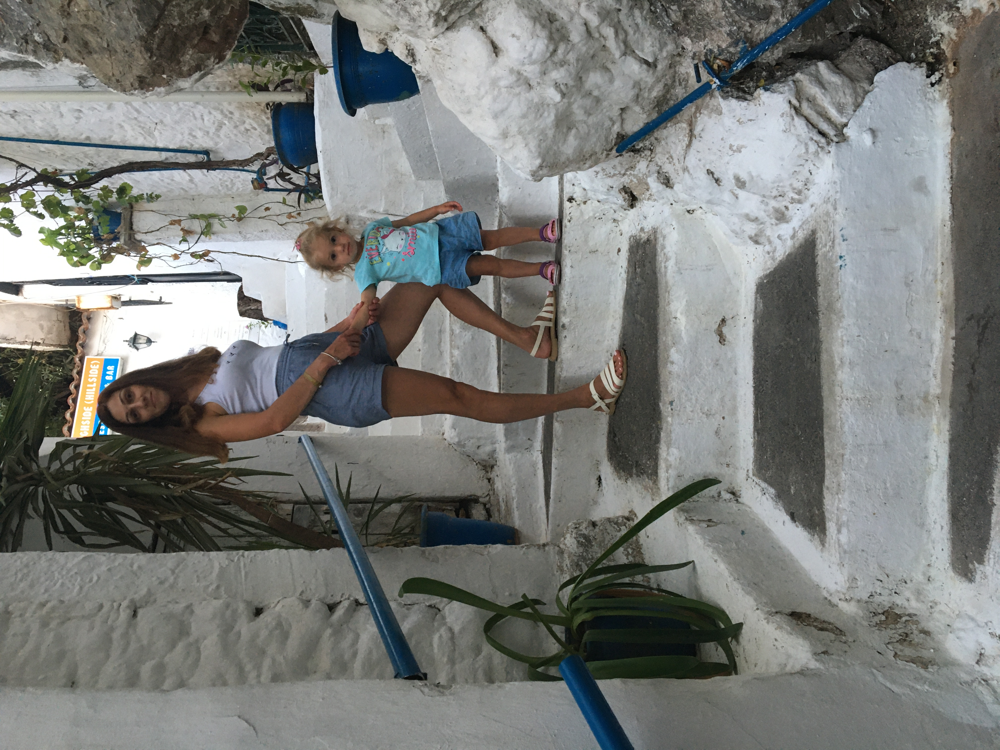
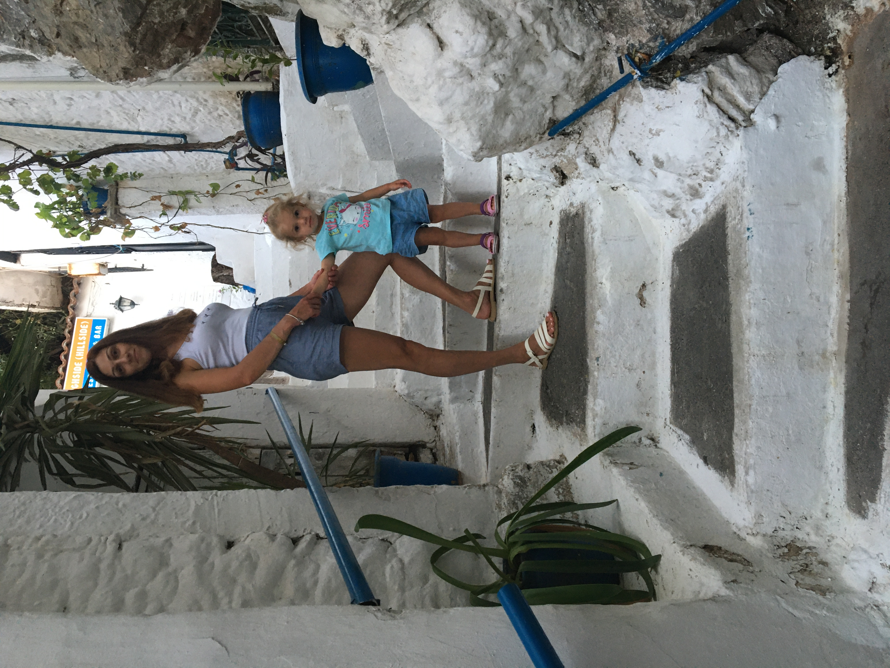
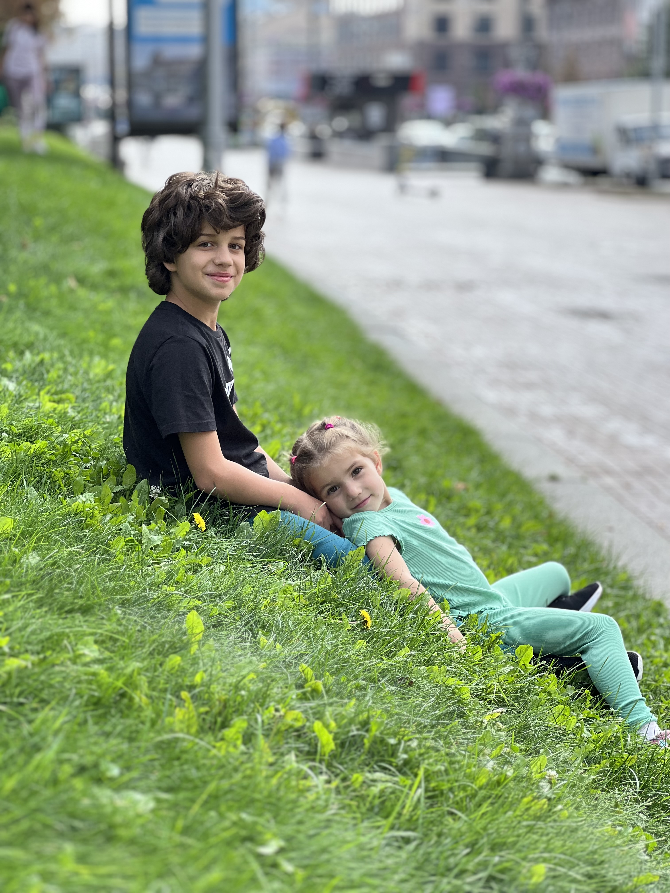
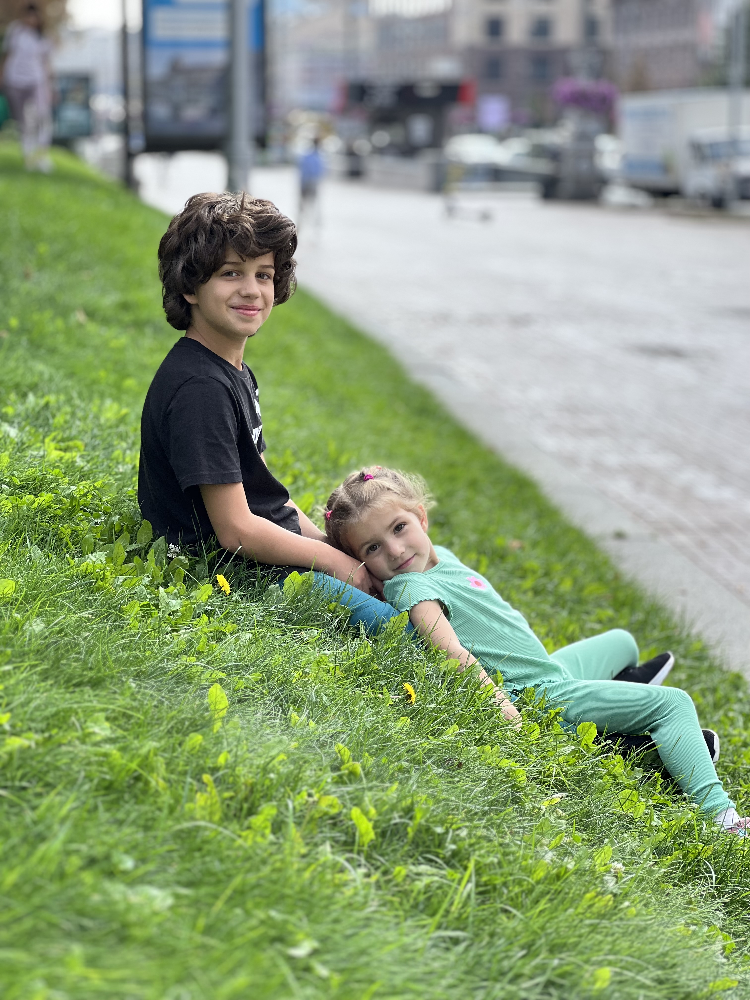

Моя візитка
Вітаю, я Євгенія Бережна
 


Я народилася і проживаю у місті Полтава. Виховую двох діточок, працюю
і навчаюся.
Я цілеспрямована, вперта і відповідальна, але при цьому маю м'який
характер. Люблю доводити до ладу всі починання і не зупинятися на
півшляху.
Десять фактів про мене
- Раніше я займалася східними танцями
- В університеті була круглою відмінницею, принципово поставила собі ціль після першої відмінної сесії здавати всі заліки і екзамени на відмінно
- У вільний час люблю займатися випічкою і випікати усіляки тортики і печенюшки
- Друкую паперові фото і роздруковую фото книги з усіх сімейних подорожей, зараз, на жаль, з подорожами не складається через рашистів
- Мене дратує безлад: вдома, на робочому місці, в дитячих іграшках і в голові
- Я ніколи не стрибну з парашуту чи з банджі-джампінгу, бо маю нездоланний страх висоти
- Подолала страх глибини: занурювалася з аквалангом до підводного рифу
- Працюю в страховій компанії Universalna
- Закінчила курси Fullstack
- Найбільшим своїм досягненням на сьогоднішній день вважаю своїх прекрасних дітей
Що привело мене на курси з верстки
Коли почалася війна, я була у дикретній відпустці з дитиною і не змогла вийти на роботу через те, що садочки не могли забезпечити укриттям всіх дітей. Я зрозуміла, що цей час я маю використати з користю, і що, можливо, мені потрібно освоїти якісь навички, які дадуть можливість реалізувати себе і заробляти гроші віддалено, без прив'язки до когось і чогось. Тоді я вирішила піти на курси Fullstack - розробника. Було дуже важко поєднувати навчання з роботою і сім'єю, але я все ж таки впоралася і здала всі роботи і проєкти, дотрималася всіх дедлайнів, пройшла всі підсумкові тестування. На останньому проєкті, я мала знову згадувати всю верстку і зрозуміла, що треба ще багато чого попрактикувати і освіжити знання. До речі, з відеоуроками Євгенія я познайомилася на курсах, за його відео я робила слайдер з фотографіями для нашого групового проєкту. І з того часу я підписана на його канал. Всі ці обставини і привели мене до нього на курс.
Мої найкращі проєкти

 
